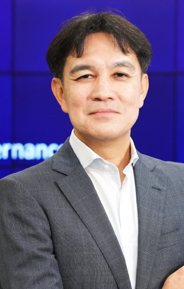

8.24（木）10：55～11：25
デジタル活用の転換点 ～これからのAI活用と支えるIT基盤
日本IBM
取締役副社長執行役員
IBMコンサルティング事業本部長
加藤 洋 氏
生成AIの発展でAIがより身近な存在になった今、企業におけるデジタル活用の転換点であるとも言え、データ拡充およびIT基盤刷新の好機でもあります。本講演では、デジタル技術の進展と技術活用の際の社会的受容やガバナンスなど考慮点を紹介すると共に、IT資産モダナイゼーションのビジネス価値および成功要因について事例を通してお話します。